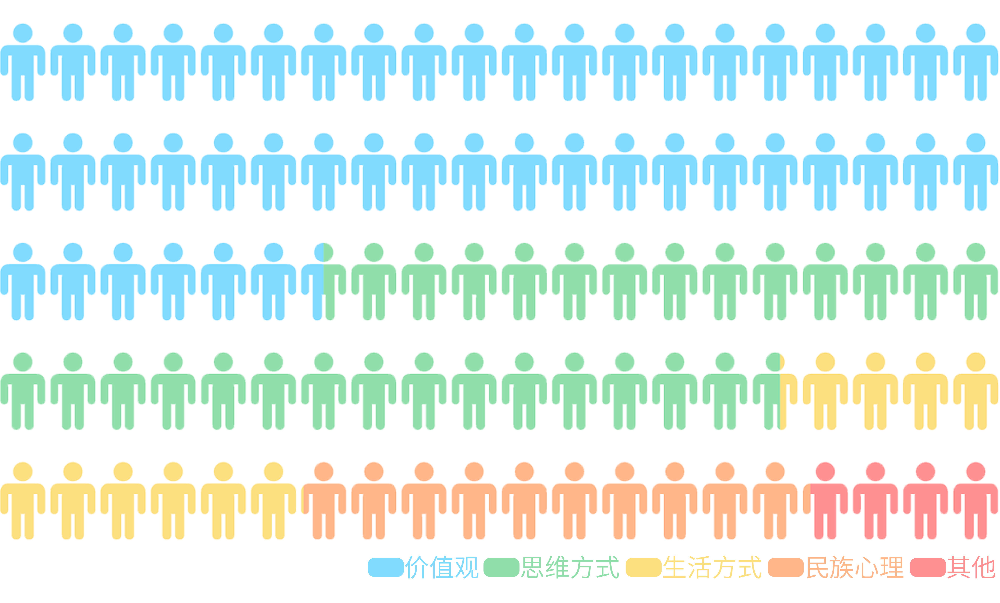
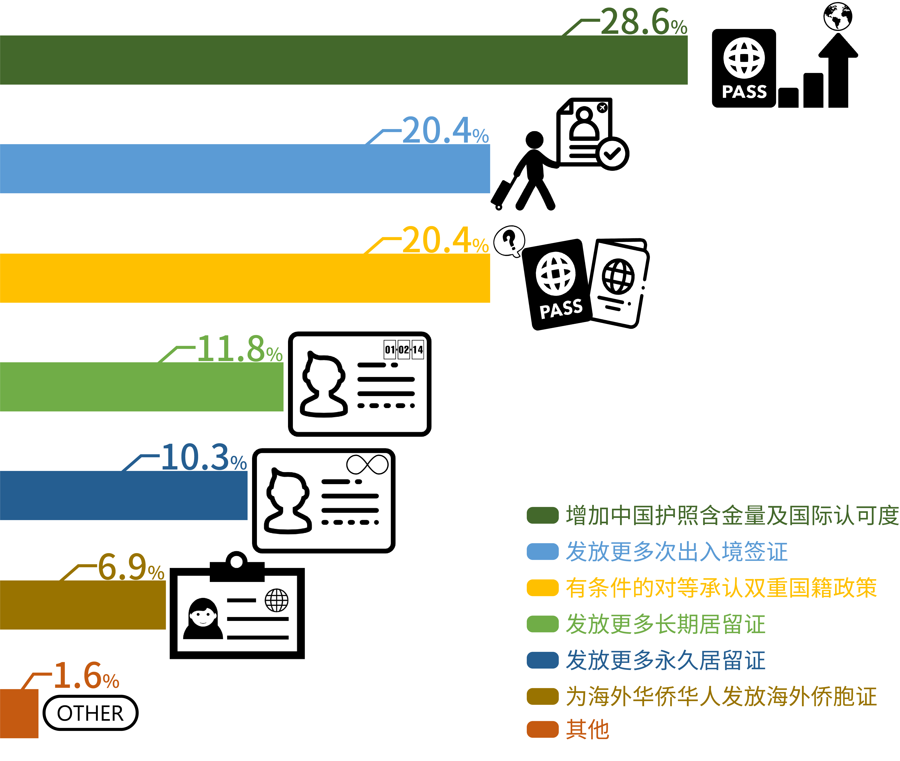
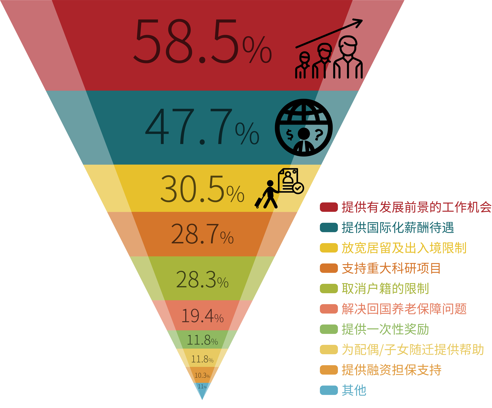

Part3 :留学生回国情况调查
资料来源：中国与全球化智库（CCG）—中国留学回国人员发展情况调研（以下数据来源同为此调研）
所调查留学回国人员中，在海外所获得的最高学历为硕士研究生学历的最多，占比为66.1%，其次是本科学历，占23.6%，获得博士研究生学历的人数最少，仅占5.1%。在海外所获学历的主修科目中，选择商科（金融、管理、营销、人力资源学等）留学人员最多，占比30%。选择社会科学（经济、政治、社会、心理）留学人员占比20.7%，超过五分之一。应用科学与自然科学分别占比17.5%、13.1%。而人文科学选择人数最少，为10.7%
资料来源：中国与全球化智库（CCG）—中国留学回国人员发展情况调研（以下数据来源同为此调研）
当前留学回国人员的行业分布主要集中在金融业（19.1%）、传统制造业（11.5%）、教育科研（10.8%）、电子信息（9.6%）、专业服务（9.2%）。而工作单位主要集中在本土民营企业（35.8%）、外资企业（20.9%）、国有企业（16.9%）、事业单位（11.5%）；2.4%的留学回国人员选择在政府工作，2.4%的留学回国人员选择自主创业，仅有1.1%的留学回国人员选择在NGO等社会公益组织工作。可见民营企业和外资企业仍然是留学回国人员的主要去向，金融业是海归就业的首要职业选择，而选择政府部门、自主创业、NGO等社会公益组织的海归则为少数。
海归就业的城市分布呈现集中化与多元化并行的分布态势。一方面，大量海归继续选择北上广等一线城市就业，海归人数占比分别为北京29.1%、上海11.5%、广州6.1%；另一方面，海归倾向于选择成都、深圳、南京、武汉、杭州等省会城市，并开始选择向二三线城市流动。在被调查者选择城市的理由中，排在首位的是城市“经济发展快”。此外，“基础设施配套齐全”（35.9%）、产业基础好“（31%）、“公共资源集中”（30.7%）等因素也被海归所重视。
中国留学生的专业选择
__________________________________________________
-海归与本科生薪资对比-
根据调查显示，有43.2%的海归和本科生薪资相同，有22.6%的海归并不清楚各自在就业市场的起薪状况。仅有26.4%的海归薪资高于本土本科生，而7.9%的海归薪资则低于本科生。这显示了海归与本土本科生相比，在就业市场上并沒有非常明显的优势。
-留学回国人员的期望年薪、实际年薪分布情况-
数据显示海归的实际薪酬与期望薪酬存在较大落差，海归的期望薪资集中在5万～15万，占比73.3%；但实际薪资集中在0～7万，占比67.4%。这一方面反映出海归对中国就业形势缺乏了解，期望薪资过高；另一方面也反映了人才发展与薪资水平之间的矛盾，不利于人才回流。
-海归工作满意度-
调查显示，在留学回国人员对目前工作的满意度方面，选择“不满意”的海归占比最高，为38.3%，选择“满意”的占比为27.1%，选择“非常满意”和“非常不满意”的占比较少，分别为3.5%和2%，且有29.1%的海归表示“一般”。结合上述三个调查所示，海归工作满意度不高可能是与期望薪资与实际薪资存在一定差距，且所学专业与从事工作匹配度不高有关。
探究：吸引海外人才回流的有效措施
-留学回国人员在融入中最难适应的因素分布-

调查发现，留学回国人员最难适应的四大因素分别为价值观、思维方式、生活方式、民族心理等，当中有46.5%的受测者表示最难适应的因素为『价值观』，说明部分受测群众认为在周围客观事物的意义，以及在重要性的评论上，对于看法有存在明显差异。其次，有29.1%的受测者表示在『思维方式』上，在看待事物的角度和方式常与众不同，此举可能导致人才无法尽其所能发挥所长。
最后，有10.5%的受测者表示在『生活方式』上，习惯的不同使受测群众感到不适应；有10.1%的受测者表示在『民族心理』上，对于民族性格或国民性格的差异，使受测群众感到不适应。以上调查说明留学回国人员对于价值观与思维方式，两因素中存有明显差异感受。
-留学回国人员最希望改善的政策内容-

调查显示，留学回国人员最希望改善的政策内容为『增加中国护照含金量及国际认可度』该项占28.6%；其次是希望改善『发放更多次出入境签证』与『有条件的对等承认双重国籍政策』，两项皆占20.4%；另外在对于『发放长短期居留证』相关的政策改善上则分别占11.8%、10.3%，两者合并占约22.1%的份额；最后是希望改善『发放海外侨胞证』政策，该项占6.9%，可见海归希望能为海外华侨华人提供政策上的照顾。
因此总体来说，留学回国人员最希望改善的政策为增加中国护照等相关证件的效力，使中国护照在世界的认可度能够有所提升，也希望政府提供更多现行政策的改善措施。
-吸引人才回流的措施分布-

调查显示，对海外中国留学生最具有吸引力的措施前五项依次为『提供有发展前景的工作机会』、『提供国际化薪酬待遇』、『放宽居留与出入境限制』、『支持重大科研项目』、『取消户籍限制』。其中，『提供有发展前景的工作机会』占比58.5%，『提供国际化薪酬待遇』占比47.7%，可见海外人才最看重的因素仍然是工作机遇和薪酬待遇。此外，留学回国人员希望在居留与出入境以及户籍措施方面能够得到相应的需求满足。科研人才则希望国家能够加大对重大科研项目的投入与支持。